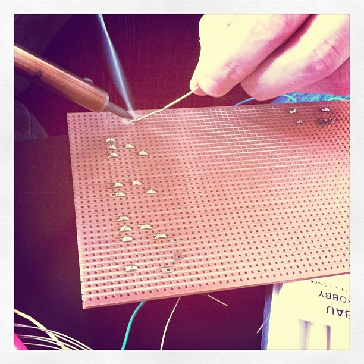
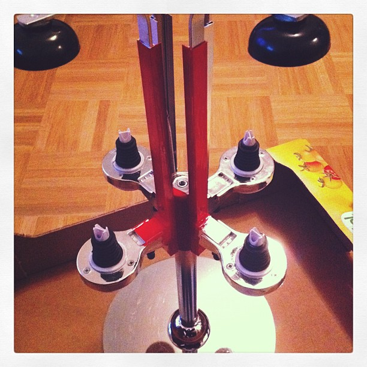
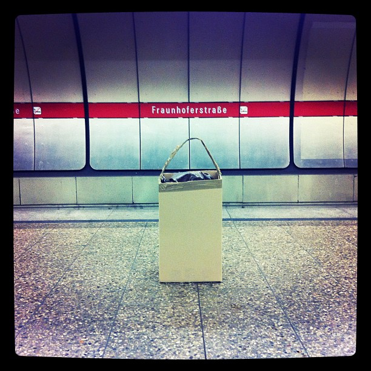

ARDUINO
EXTRAVAGANZA
Nikolai Onken, Tobias Schneider & Stephan Seidt
October 1st, 2011
OMG THANX <3

Javscript, Hardware and ❤
Embedded Hardware
Design and build as an integral part of a system or device
Necessary to make complete; essential or fundamental.
Key factor: Capabilities
- Plug sensors, motors or LEDs into pins on the board
- Great for building hardware prototypes
or
- Plug ethernet, monitors and peripherals into designated ports
- Great for building software-centric products
Key factor: Complexity
- Low complexity: Few layers of abstraction
- Programming is quite close to the hardware.
or
- High complexity: Many layers of abstraction
- You move farther away from the hardware
Key factor: Costs
Cheaper embedded hardware enables developers!
Poll
How many of you have programmed an Arduino?
How many of you have programmed a normal computer?
Turning point?
Raspberry Pi Specs
- 700MHz ARM11 CPU
- GPU w/ OpenGL ES 2.0
- 128M RAM
- HDMI video output
- USB 2.0 port
- SD/MMC/SDIO memory card slot
How much?
$25 or about €19
WTF?!


